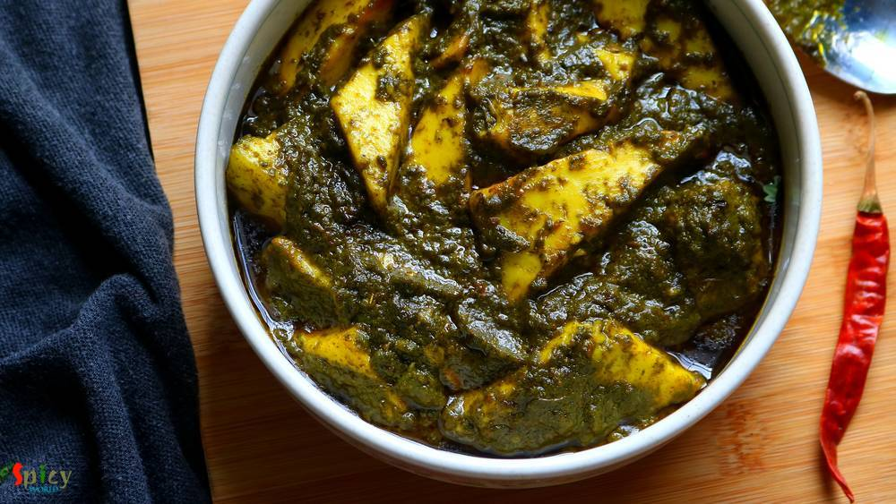
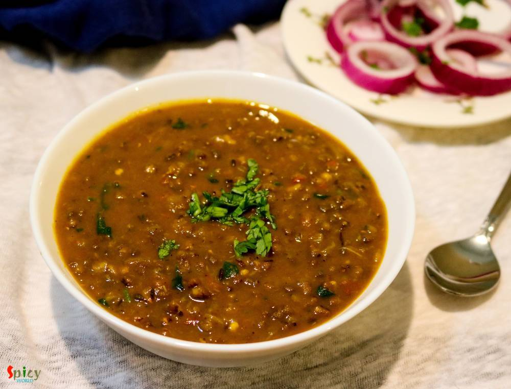
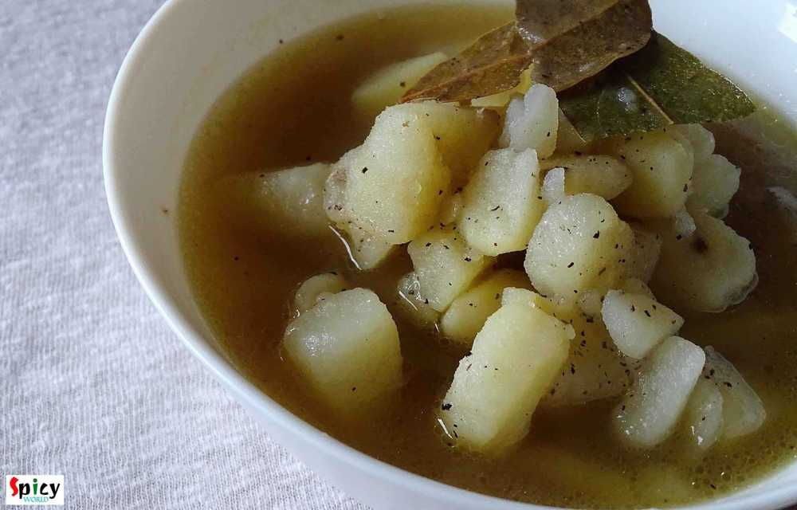
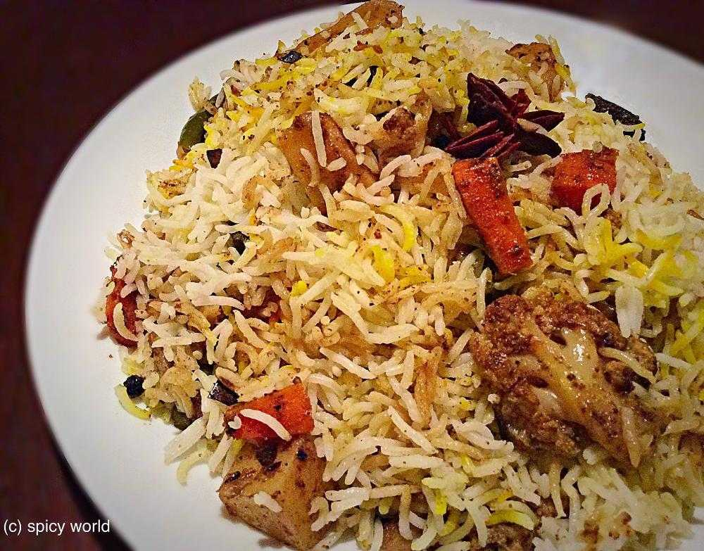

Simple and Easy Recipes
Posts on 'veg'

Veg Recipe
Nov 19, 2019
Fulkopi menas Cauliflower in Bengali language. Fulkopir Rezala is a delicious veg mughlai delicacy. Like any other non veg rezala gravy this vegetarian version also tastes delicious. Cauliflower florets will be cooked in a white gravy which consists of onion, ginger, garlic, yogurt, poppy seed and nut paste. Fulkopir rezala goes best with plain rice, roti, naan or pulao. Do give this recipe a try ...


Nonveg Recipe
Sep 19, 2019
Cheese stuffed Chicken balls are very delicious starter item. From younger to elder everybody love these balls. They have crispy coating outside and gooey cheese inside .. treat to your mouth! You can use any cheese of you choice. For this recipe I used ground cornflakes instead of breadcrumbs to coat the balls. You can definitely use breadcrumbs. Recipe of chicken cheese balls is very easy. If yo ...

Veg Recipe
Aug 15, 2019
Dopyaza means double the amount of onion. Paneer Dopyaza is a North Indian Paneer gravy preparation which has a thick, creamy sauce along with soft Paneer cubes and slight crunch of onion. In this recipe onions will be added twice in two different forms. It goes best with naan, roti or jeera rice. Do give it a try and let me know how it turned out for you.

Veg Recipe
Jul 9, 2019
Aloo tikki means Potato cutlets. Aloo tikki chaat is a mouth watering snack from North Indian cuisine. Main trick about this recipe is to make crispy and crunchy tikkis. If they become soggy, the chaat will not come out that tasty. Usually these tikkis are served with Chana masala (chickpea curry), Yogurt, Tamarind chutney, Green chutney and Sev. Do give this recipe a try and let me know how it tu ...
")
Veg Recipe
Jun 12, 2019
Kala Jamun is nothing but a dark colored Gulab Jamun. If you fry the gulab jamun little longer they will become dark in color and that is Kala Jamun. It has a unique taste and falvor. Kala Jamun tastes delicious if you let them sit in sugar syrup for overnight. I made them with semolina this time. Recipe was very simple and easy. One important tip is make sure the oil temperature is medium hot whi ...

Veg Recipe
Jun 4, 2019
Paneer Masala has a spicy onion and tomato based gravy with some flavorful spices like garam masala powder, dry fenugreek leaves etc. In any dhaba style (road side food joints) curry you will get actual flavors of the spices as they follow one simple rule - slow cooking. Fry the onion until golden, cook ginger garlic paste until raw smell gone, after adding dry spices cook on low flame and obvious ...

Veg Recipe
May 21, 2019
Musur Daaler Bhorta is traditional Bengali recipe. Bhorta / Bharta means mashed, it can be vegetables, chicken or lentils. In this recipe we will mash the boiled orange lentils with onion, mustard oil, fried red chilies and garlic. It tastes best with steamed rice and few drops of lemon juice. During summer Musur Daaler Bhorta is a must have. Try this easy recipe in your kitchen and let me know ho ...

Veg Recipe
Apr 23, 2019
Ras Malai is a very popular Indian dessert in which first we will make soft, spongy rasgullas then they will be soaked in flavored sweetened milk. It tastes so so good during summer. Always serve Rasmalai chilled. In Bengali it is called Roshomalai. You can obviously make Rasmalai with store bought Rasgulla to cut down the time and effort. Do try this recipe in your kitchen and let me know how it ...

Veg Recipe
Apr 16, 2019
After marriage during my stay in India, I was a fan of my MIL's Kanchkolar Chop. She used to make them at least once in a week in the evening. Anything batter fried or crumb coated is either Chop or Cutlet to Bengali, like Alur Chop, Mochar Chop, Enchorer Chop, Macher Chop. The taste of her Raw Banana Fritter was so much better than the street shop's ones. Adding chopped onion, coriander leaves an ...
Apr 9, 2019
Aam Kasundi is a fire free recipe. You don't need to cook anything here. To make Bengali Aam Kasundi all you have to do is to blend everything in a blender and then for 2-3 days keep it under sunlight, after that in fridge. You can enjoy this preservative free Aam Kasundi all through the year. The aroma and taste of homemade Kasundi is phenomenal like any other Chutneys. I kept the recipe very sim ...

Veg Recipe
Mar 2, 2019
Doi Potol is a traditional Bengali vegetarian delicacy. Potol is pointed gourd or parwal. In this recipe pointed gourd will be cooked in a spicy and tangy yogurt based sauce. I didn't use onion and garlic in this, but you can if you wish. Doi Potol goes best with plain steamed rice. I kept the recipe very simple and easy. Do try this in your kitchen and let me know how it turned out for you.

Veg Recipe
Feb 10, 2019
Niramish means without onion and garlic. Usually when we offer a meal to god / goddess with our respect and devotion, we call it 'Bhog' / 'prasad' . In any prasad, this Aloor Dom is a must with khichdi and chutney. This recipe is without onion and garlic, that's why I mentioned 'niramish'. During monsoon you can also enjoy this with khichuri, beguni and chutney or in weekend breakfast make some lu ...
")
Veg Recipe
Feb 4, 2019
Whats the fun in having Momos without chutney?sounds so boring. This red colored hot and spicy chutney has garlicky and roasted tomato flavor and tastes awesome not only with momos but you can pair it with samosas, kachoris, chicken pakoras etc. In few shops you will find 3 types of momo's chutney - red, yellow and white. But this red hot chutney is very common and popular all across India. Do try ...

Veg Recipe
Jan 14, 2019
Lehsuni Daal Tadka is a spicy toor lentil preparation which has a very flavorful garlicky tempering. This daal tadka goes best with plain chapati or rice. The recipe is very simple and easy. I usually make this lehsuni daal during winter as it tastes so good and seems comfort in a bowl in those chilly afternoons or nights. Try this in your kitchen and let me know how it turned out for you.
Jan 7, 2019
Koraishuti means green peas and Koraishutir Kochuri is not just a food, it is an emotion for a Bengali. According to me, winter is incomplete without 'green peas'. Am I right ?? We Bengalis love to eat 'koraishutir kochuri' during winter. In my home nobody brings this kochuri from shops. My mom always makes this at home with 'aloo dom' , 'payesh' and everybody loves it. Nowadays we don't need to w ...

Veg Recipe
Dec 27, 2018
Paneer Bhurji is a delicious recipe of crumbled cottage cheese which goes best with plain chapati or paratha or pao. In this recipe, crumbled paneer will be cooked in onion, ginger, garlic, tomato based creamy sauce with some flavorful spices. This paneer bhurji gravy will take very less time to cook. Try this recipe in your kitchen and let me know how it turned out for you.

Veg Recipe
Dec 17, 2018
This palak paneer recipe is the best for weeknight dinner. Usually while making palak paneer, we need several kind of paste like onion paste, tomato puree, spinach paste, ginger garlic paste ... time consuming ! In this recipe everything will be stir fried in little amount of oil then we will make just one paste out of them. Creamy, tasty and buttery palak paneer will be ready in a jiffy ! Do give ...

Nonveg Recipe
Nov 29, 2018
Tandoori Prawn Pulao is a delicious, spicy seafood rice pilaf dish in which Prawns will be marinated with yogurt, tandoori spices and other ingredients then will be tossed with long grain Basmati rice ... so so good! You can have this Prawn Pulao as it is or any kind of gravy on the side will work just fine. The recipe is simple and take very less time to cook. Try this in your kitchen and let me ...

Nonveg Recipe
Nov 22, 2018
Hariyali Chicken Kabab is a very delicious variety of kabab in which boneless chicken will be marinated in yogurt, ginger, garlic, mint-coriander paste and lot of fresh spices along with few other ingredients. You can definitely use chicken legs instead of boneless. I will recommend you to use chicken thighs instead of breast pieces, as thighs will come out much more juicy. Hariyali means green co ...

Veg Recipe
Nov 19, 2018
Aloor Dom is a very good old Bengali recipe which can never go wrong with anything. You can serve this Bengali style dry Potato curry with Luchi / Porota / Kochuri / Pulao / Fried rice and what not. It tastes heavenly. I made Lachha Parathas to go with it. The recipe of Aloor dom is very easy in which potatoes will be cooked in onion tomato based gravy along with a special ground masala and yes, t ...

Veg Recipe
Nov 12, 2018
Doi Fuchka or Dahi Puri Chaat is one delicious and popular variety from Chaat Gharana. You can get several types of chaat in India from street vendors. They all are very very tasty. In Kolkata, one of the famous chaat is 'doi fuchka'. The hollow chips are filled with spicy potato filling, thick sweet and sour yogurt mixture, sweet tamarind chutney along with lots of fresh coriander leaves and few ...

Veg Recipe
Nov 4, 2018
Paneer Pakoras are delicious crispy vegetarian appetizer which can be served with mint or tamarind chutney and a cup of strong tea. I cut the paneer cubes from the center and filled it with green chutney as paneer has a bland taste. The recipe is very simple and easy. Your kids will love these Paneer Pakoras. Enjoy the recipe with detailed video.

Veg Recipe
Oct 16, 2018
In Bengal, Durgapujo is incomplete without Ghugni. During pandal hopping one of the best selling street food after phuchka is Ghugni. Not only as a street food, on the auspicious day of Bijoya Doshomi (last day of durga pujo) Ghugni along with Nimki and Naru is served in every household of West Bengal. Ghugni is a yellow peas curry with few chunks of potato although many people add chopped fried c ...

Nonveg Recipe
Oct 4, 2018
I made this Kosha Chingri Macher Kalia last weekend with some steamed rice and curry leaves tempered musur daal. He finished the lunch (read there wasn't any meat curry, not even leftover) with a big smile, that too on weekend. This spicy prawn curry worked like a magic. So, I had to share with you all the recipe of this Bengali delicacy - kosha chingrir kalia. Though the word 'kosha' suggests slo ...

Veg Recipe
Oct 2, 2018
Paneer Butter Masala has a thick, creamy nut, onion and tomato based sauce with some juicy and lightly fried paneer pieces, also the rich gravy has an aromatic flavor of butter and kasuri methi (dry fenugreek leaves). Those who had 'dhaba' (street side food joints of India) food once in their life knows that no restaurant can replicate their rustic yet delicious taste. Dhaba style paneer butter ma ...
May 9, 2016
Every family has their own breakfast story. In Bengali households, 'luchi' is the common one. Sunday mornings are meant for 'luchi - torkari'. I was never a breakfast loving person, still not. Actually for me the toughest thing is time management in the morning, always hullabaloo ! But my husband is a huge fan of 'luchi' or 'kochuri', so I have to make it once or twice in a week. I have already sh ...

Veg Recipe
Sep 4, 2018
Upma is a very healthy and tasty Indian breakfast, in which the main ingredient is semolina. It is very popular in southern part of Indian. But nowadays Upma is served in many other households also. Almost twice in a week my mom used to give me 'jhal sooji'(Bengali term) in my lunchbox. It's not just me, my friends also enjoyed it. The fresh flavors of curry leaves and green chilies, proteins from ...

Nonveg Recipe
May 23, 2016
Last week I was thinking that my blog doesn't have the recipe of 'mangsher ghugni' and being a Bengali I felt very awkward. There is no Bengali in the world who doesn't know about this dish ... yes, 'mutton ghugni' is that much famous. On special occasions or guest's arrival in evening, 'mangsher ghugni' is a very common item we Bengalis make. It's a Indian version of 'chili'. We make the curry of ...

Veg Recipe
Aug 27, 2018
A cup of tea and some vegetable cutlets .... do you need anything more to spend a winter or rainy evening ?? I am always up for this kind of evenings. These cutlets are very much available in Kolkata. I guess, almost nobody makes vegetable cutlets at home in Bengal. On any occasion or just to enjoy some snacks, these chops were always bought from 'telebhajar dokan' / fast food center in my home. B ...

Nonveg Recipe
Jun 13, 2016
We, Bengalis, love to eat fish in many forms. One of the popular snack of West Bengal is 'macher chop'. Spicy crumbled fish inside and crispy coating outside - scrumptious !! We both usually enjoy this snack in the evening along with a cup of tea or with a can of beer. Both combos are unbeatable. If you have to impress any Bengali ever in your life, just indulge him/her in 'Bikeler adda' (evening ...

Veg Recipe
Jun 4, 2016
'Khichuri' is a seasonal one-pot-meal. We generally enjoy it in monsoon or winter. The easiest dish of rice category is 'khichdi'. From bachelor to elder, everybody knows how to make it. But this is a tastiest variation of khichdi. 'Achar' means pickle, I used mango pickle here. The process is very simple, no need to fry or cook anything separately, everything will be cooked in one pot and one tim ...

Veg Recipe
Aug 20, 2018
I fell in love with 'daal fry' when I first tasted it at a restaurant. A big bowl of daal fry with fresh aroma of coriander leaves and few slices of naan .. very simple equation to make me happy. Yes, you read it right .. no need of non veg stuff with this kind of blissful meal. In India, I never had daal fry at home, always in restaurant. But time flies so quickly. Now I can make it by myself. I ...

Veg Recipe
Jun 3, 2018
'Sobji' means vegetables and 'daal' means lentils in Bengali. This is a very popular yellow Moong daal recipe which goes best with steamed rice. In Bengali weddings this daal is a must item for lunch. My husband is a fan of this dish. He doesn't even need any sides while having this particular daal and bhaat. Though I need something to go with it, so I have made few Beguni and my simple lunch beca ...

Nonveg Recipe
May 1, 2018
'Sobji diye Macher Jhol' is nothing fancy in Bengali households. But we people have crazy obsession about it. Tollywood made a movie named 'Macher Jhol' ! So, being a Bengali I had to share this recipe with you all. You can make so many variations of this dish. Today I made it without onion and garlic, but you can surely add them if you want. One can also skip the vegetable part. Do try this easy ...

Veg Recipe
Aug 31, 2016
Durga puja is just a few days away. Every street of Bengal and other parts of India will be filled with people and food stalls. Among all of them 'chaat' stalls are my favourite. I like various type of chaats like panipuri, dahi puri chat, papri chat, samosa chat, nimki chat, batata puri chat, ghugni chat and so on. Though today I am not sharing any Bengali chaat, but 'pav bhaji' is quite famous i ...

Veg Recipe
Aug 22, 2016
How many of you like the smell of 'capsicum' / green bell pepper in vegetarian dishes ?? I am. Whenever I cook, specially without onion and garlic dishes, most of the time I end up adding capsicum into it ... i know it sounds stupid but surprisingly the taste becomes more yumm ! Today's recipe is about 'paneer rezala', a vegetarian mughlai delicacy, where paneer cubes are cooked in a nut based whi ...

Veg Recipe
Aug 11, 2016
Chanar Dalna is a very hearty vegetarian preparation with simple ingredients. My mom used to serve this curry with 'Luchi' and the pair was heavenly. 'Chana' means curdled milk or homemade paneer and 'Dalna' means curry. Both of them are Bengali words. You can definitely make this dalna on any puja / vrat days as they are onion and garlic free. I have already shared 'chanar kalia' recipe with you ...

Veg Recipe
Jul 14, 2016
I had no idea what this 'pheni paratha' is until one day I watched a video of this in YouTube and the end result was jaw dropping - so flaky and soft parathas ! Now the thing is they are not easy to make. You will need some patience and several trials to achieve the perfect texture of 'pheni parathas'. But these delicious breads are worth trying. I served 'Keema Aloo' with these parathas and we bo ...

Veg Recipe
Jul 21, 2016
How many of you guys clean your kitchen pantry often ? Well, I do it once / twice in a year .... very common for a super lazy person ! Last week I found half bag of whole moong daal in my pantry which was sitting behind a pack of pasta without whispering a word. Then I thought why not make a very simple daal like comfort food. Didn't get time to soak the lentils in water, that's why I used pressur ...

Veg Recipe
Jul 6, 2016
I find this particular recipe of pulao very relaxing and different. 'Achaar' / pickle itself is a very tasty ingredient. With rice and some veggies it creates a very beautiful dish which takes so little time to cook. If you are looking for easy but unique weeknight dinner, then 'Achaari Pulao' along with some raita and salads should be the one for you. This is a very flexible preparation, you can ...

Veg Recipe
Jun 23, 2016
After scorching heat of summer, first few days of monsoon are my favourite. In those days I don't like to stand in front of the gas for long time, because in the meantime you can enjoy the rain by sitting beside the window. I think you guys have already guessed that I am talking about one pot meal - they are so easy to cook. One of the famous one pot meal in Bengal is 'khichuri' / khichdi. I have ...

Veg Recipe
Jun 24, 2016
Panchmel Daal is a very healthy and traditional Rajasthani dish, which you can make with five types of lentil - yellow moong, urad, masoor, toor, whole moong / chana daal. This daal is also known as 'panchkuti daal'. This dish is fully packed with protien and nutrition, also it requires very less oil. You can enjoy this delicious, thick consistancy daal with plain roti, bati or rice. Not only the ...

Veg Recipe
Jun 17, 2016
Most probably I am the only blogger who have taken so long to post about her own regional recipe of 'phuchka'. Because almost every blogger has their own regional recipe of 'panipuri / golgappa'. But it's better late than never. In Kolkata I never eat 'phuchka' with sweet chutney, always with tangy tamarind water ? and believe me there is no fun of having them sweet, the taste has to be spicy and ...
Jun 16, 2016
Onion parathas can be anyone's savior because they are very easy to make. I know that in many households people loves to eat 'paratha' in their breakfast. Only we know about the pain of making time-consuming breakfast. But these parathas are so simple and take very less time to cook. We both thoroughly enjoyed the spicy onion filling inside those soft parathas. You can make 5 parathas with these p ...

Veg Recipe
Jun 8, 2016
This dish is an indo-chinese item which is very popular and frequently ordered in restaurants of India. Gobi means cauliflower. The recipe is very similar to chicken manchurian (which I have already posted), except the key ingredient here is cauliflower, not chicken. You can make this dish with potatoes, soya granules or raw jackfruit also. Every single time it tastes delicious and goes best with ...

Veg Recipe
May 19, 2016
If your milk gets curdled, don't throw away, you can do a lot with it. Well, it's bengali style 'chanar kalia' where plain curdled milk / cheese balls are first deep fried and then cooked in a tomato based gravy. It's a vegetarian delicacy of Bengali cuisine. The dish tastes awesome and goes best with plain basmati rice. In any puja or special occasion, we make this dish and it always becomes the ...

Veg Recipe
May 12, 2016
I was drawn towards this dish because of its easy method of cooking. In weekdays I never manage my time to make 'breakfast', but when I found out about this recipe where dosa batter doesn't need any farmentation ... I was interested ! You just have to rest the batter for 10 minutes, after that you can make your delicious breakfast in no time. One of the famous south indian breakfast is 'uttapam'. ...

Veg Recipe
May 11, 2016
'Pulao' plays a very significant role in Indian cuisine. Our cooking is mostly based upon 'curry' / gravy version which goes best with pulao. Their relationship is like - 'behind every tasty curry, there is a pulao' ... ???? You can never underestimate it because sometimes 'pulao' itself can be very rich and attractive like 'yakhni pulao', 'prawn pulao', 'sweet pulao' and so on. Today I am sharing ...

Veg Recipe
Apr 13, 2016
This is a very typical Bengali veg dish which you can only enjoy with steamed rice. We, bongs, have a very strong connection with 'posto' / poppy seeds and 'shorshe' or mustard seeds. We can creat so many delicious items with these two simple things. Now, 'he' is not a fan of eggplant, except fried version, to feed him this particular vegetable is really painful. I always have to make special dish ...

Veg Recipe
Apr 7, 2016
We all love to eat fried stuff, right ? I know they are not that much healthy but still we do like them. I had lots of mushrooms in my fridge and couldn't find any interesting idea how to use them. Then suddenly I saw a picture of some beautifully golden colored veggie pops in google and I also remembered that I had cheese in my fridge. Then there was no confusion that I was going to make some che ...

Veg Recipe
Mar 30, 2016
I have not grown up too much of eating 'paneer' rather I grew up eating fish, chicken, rice, dal and vegetable dishes. I ate paneer in parties and very few times in restaurants. But after coming to US I learned how to make paneer at home and trust me, those self made soft white cubes gave me immense happiness. So, after that day we both have become paneer lover and have tried several dishes. This ...
")
Veg Recipe
Mar 21, 2016
I have seen two types of cauliflower's roast curry from childhood, my mom makes the yellow + spicy version and the other one is white + sweet version. Both of them are my favourite but today I am sharing the recipe of second version because I have already shared a similar as 1st one cauliflower curry in my earlier post. So, in Bengal this cauliflower white curry becomes very popular during festiva ...

Veg Recipe
Mar 13, 2016
In India one of the famous bread is 'lachha paratha', soft and flaky with lots of layers. You can pair almost any veg or non veg gravy with this paratha, everytime they will taste awesome. For novice, this type of paratha may not be successful on first attempt. But believe me, after few try they will seem very easy. The main attraction here is the layers. The more layers you can make, the more fla ...

Veg Recipe
Mar 17, 2016
The best and most common weeknight's meal is dal and rice. Nobody likes to eat bland dal, everybody needs some zing to their comfort food sometimes. So, 'spicy urad dal' is my new favourite dal with some kick. You can also call this lentil soup 'tarke wali dal', now everyone has their own story of 'tempering'. I have used lots of garlic, fresh curry leaves, cumin and mustard seeds. But you can add ...

Veg Recipe
Feb 15, 2016
'Palak paneer' is a famous north indian dish. This is a hit item for spinach lovers. After adding heavy cream the texture will make you greedy. Palak paneer's smooth, rich and velvety gravy is beyond everything. It goes very well with butter naan. It's a no onion and no garlic recipe
 / Cauliflower Fritters")
Veg Recipe
Feb 8, 2016
We Indians are crazy about 'pakore' .. don't you think so ?? We make fritters out of almost everything - 'potato', 'eggplant', 'okra', 'cabbage', 'chili', 'lentils', 'chicken', 'fish' and so many more ?. 'He' adores only two vegetables in his life, one is potato and the other one is cauliflower. You can impress him with any type of cauliflower dish. So, is there any doubt about what I'm talking a ...

Veg Recipe
Feb 5, 2016
Sometimes, specially in weekdays, I just want to spend very little time in kitchen but also cook some tasty foods. 'Dahi Aloo' is one of the quickest and tastiest maincourse I found out. You have to cook the crumbled and boiled potatoes in a spicy, tangy yogurt sauce. It is that simple, can you imagine ? This is also a no onion and no garlic recipe, best for puja days or 'vrat' days. You can pair ...
 / Potato and Cauliflower curry / Aloo Fulkopir torkari")
Veg Recipe
Jan 25, 2016
We, nonvegetarian people, generally ordered nonveg dishes while eating at restaurants or dhabas. But we also love to eat home cooked vegetarian meals. In one of our trip to Digha before marriage, we made a stop at the famous 'Sher-e-punjab' for heavy breakfast. We ate there several times before but never did breakfast, so, that was our first time. As it was morning, we orderd veg like 'aloo parath ...

Veg Recipe
Jan 25, 2016
Last month we, two, went for shopping at our nearest outlet mall. We often go there for shopping. A food truck 'Kebabeque' was a new edition to the food court. They served middle eastern food like 'falafel rice', 'hummus', 'shawarma platter' etc. We took a rice bowl with falafel. They served a good amount of flavourful saffron rice, fresh spinach, some good falafel, tasty hummus and tzatziki sauce ...
Jan 14, 2016
Spring is coming my friend, spring is coming. In Bengal we celebrate 'makar sankranti' and I know that every part of india celebrates the same festival with different name and food. From childhood, I love this festival. My grandma and ma makes so many varities of food like 'pithe', 'dudh puli', 'bhaja pithe', 'soru chakli', 'ashke', 'patisapta', 'kholachi' etc with their love and affection. Each a ...

Veg Recipe
Jan 12, 2016
Whenever food has smoked or grilled flavour, there is no second thought about it. Because it has to be tasty. There are so many colorful vegetables available in grocery market during winter. I told you before that my love for winter is only because of food. We can make and also consume without any tension various types of food. Today I am talking about 'eggplant'. Though we both are not big fan of ...
")
Veg Recipe
Jan 11, 2016
In India samosa is a very popular appetizer. We call it "singara" in West Bengal. Almost every evening my grandpa brought samosas from roadside shop and they were delicious. Last week I made samosas at home (inspired by my mother and husband) and they came out really tasty. So, please try this recipe at your home and impress your family.

Veg Recipe
Jan 7, 2016
I have many stories about 'aloor porota' in my life. My mom used to give me pure bengali style 'aloor porota' in my lunch box during school life and my friends were always a fan of my lunch box. That was my first story of this porota. When I was in college, we (my family) loved to eat 'dhaba food' during travel. In India, each and every dhaba serve 'aloo ka paratha'. I tasted their paratha many ti ...

Veg Recipe
Jan 5, 2016
Do I really need to say anything about this ?? It's 'chaat' !! You can get several types of chaat in India from street vendors. They all are very very tasty. One of the famous chaat in Kolkata is 'doi phuchka'. They fill the phuchkas with spicy potato filling, thick curd mixture, tamarind chutney and sprinkle some chopped onion and coriander leaves .. ssluurrpp ... !!! Now I am staying in USA, so ...

Veg Recipe
Dec 30, 2015
I heard a lot about this dish in past few months and started to research. As I never tasted it before, so I went to an Indian restaurant in Austin named 'Bombay Bistro' and tasted their 'daal bukhara'. Oh my god, it was lip smacking good and then I realized why this dal is so famous. Texture of the dal really impressed me a lot. The authentic recipe is very simple and easy but main trick here is t ...

Veg Recipe
Dec 29, 2015
Everybody loves paneer, right? Specially when there is a spicy paneer stuffing inside a paratha, I am always up for it. This was my first try on 'paneer paratha' and I just nailed it. Believe me it is much easier than 'aloo paratha'. I made those in breakfast with 'chana masala' and the combo was really gorgeous. Parathas came out perfectly crispy and soft. The taste was unforgettable, we enjoyed ...

Veg Recipe
Dec 20, 2015
From childhood, whenever I got attacked by cough and cold, my mom used to feed me this 'aloo (potato) moricher torkari' along with some puffed rice / 'muri'. Its nothing but a simple potato curry with mild flavors of 'ghee' and 'morich' / black pepper. According to my mom, the heat of black pepper goes well against cold and cough. Magically my neck always felt better after finishing this mom-made ...
Dec 16, 2015
After coming to Texas I was familiar with the name of 'tortilla'. Here maxican food is very famous. 'Tortilla' plays a big role in mexican cuisin. They make various dishes with this tortilla and many of them tastes really delicious. With tortilla you can make 'taco', 'burrito', 'quesedilla', 'enchilada' etc. I really love each of them and that's why I want to make tortilla in my own kitchen. Usual ...
 / Kolaier Daal")
Veg Recipe
Dec 15, 2015
Soul food means the food which you can enjoy from the bottom of your heart while eating. Being a bengali I always face a common question- 'fish and posto(poppy seeds) are your soul food, right?'. And my answer is always 'oh, hell yaa' ... ? Today I will talk about vegetarian food. We always make 'biulir daal' / 'urad daal' with posto. The combo is nothing but heavenly. There is a must ingredient ...
 Fried Rice")
Veg Recipe
Dec 12, 2015
I guess almost everybody love indo-chinese food. The recipe of this fried rice is also indo-chinese and homemade version. I heard from many foodies that in homemade fried rice, there is always lack of that chinese flavour / restaurant flavour. But after following this recipe, you will forget about this complain. You can serve various side dishes with this kind of 'fried rice'. Try this in your kit ...

Veg Recipe
Dec 10, 2015
Last weekend I wanted to make something new veg maincourse, thats why I chose this 'paneer kofta curry' and it was just delicious. You can make kofta curry with raw banana, jack fruit, chicken, fish, mutton etc. They all tastes really good. I made it with paneer kofta, you can see how good looking they are and by clicking the picture below you can see how it's prepared. I served this curry with pl ...

Veg Recipe
Dec 9, 2015
'Kofta' is a very flexible food item, you can serve them as starter or you can soak them in gravy and serve as maincourse also. This was my very first attempt on 'kofta' and from the beginning I was a bit nervous because I often heard that while frying them, kofta has a chance to break. But I carefully maintained the proportion of ingredients and taaddaaa ...!! All of my 'kofta's came out perfectl ...

Veg Recipe
Dec 7, 2015
'Makhni' is a name of rich, smooth, creamy gravy which is very popular in India. You can make 'chicken makhni', 'paneer makhni', 'kofta curry' and many more dishes with this gravy. I personally love the methi flavour and creaminess about this gravy. We had it in dinner last night with soft butter naans. The combination was heavenly. You just have to try this.
Dec 4, 2015
Last tuesday 'he' gave me a call from office at 5:00 pm and requested me to make some 'chatpata' snacks which will go very well with tea. So, I had exactly 1 hour in my hand to make something. Don't know why, but suddenly a thought of spending evening time in India, came in my mind. My grandpa used to bring different kinds of snacks like 'samosa', 'nimki', 'vegetable chop', 'kachori', 'beguni' etc ...

Veg Recipe
Nov 28, 2015
I think almost every Bengali is familiar with this name. I love 'posto' or poppy seeds in any form. I made this dish on yesterday lunch along with some steamed rice. The fresh flavour of mustard oil and poppy seed paste always makes me crazy. I made it in microwave but you can also make this in oven. Try this in your kitchen and let me know how it turns out.
")
Veg Recipe
Nov 25, 2015
I have a friend in New Jersy, Monica, who makes the best chana masala ever. I learned this recipe from her. Since we moved from Jersy I missed her and her cooking very much. This is a punjabi dish, goes very well with bhatura, puri or roti. The recipe is very simple and it tastes delicious.
")
Veg Recipe
Nov 15, 2015
'Khatta' means tangy/sour and 'baingan' means eggplant/begun. Most probably this dish is from Kashmiri cuisin. I do not have much knowledge about this cuisin but I can assure you that you will never forget this eggplant recipe. Last wednesday we both wanted to eat veg in dinner and I had an eggplant(begun) in my fridge. So, I googled for some spicy veg recipes made with eggplant, and my eyes got s ...

Veg Recipe
Nov 11, 2015
This is a no onion and no garlic recipe. Usually in many 'puja's we make this kind of dishes. 'Potato curry' goes very well with 'luchi', 'paratha', 'kochuri' etc. But last tuesday I tried a new combo with 'bhatura'. Magically we both loved and enjoyed it very much. I learned this potato curry from my mom. She also follow the same recipe for 'niramish aloo dom' and it tastes always good. Try this ...

Veg Recipe
Oct 4, 2015
This dish dont need any explanation. Because its 'Biriyani'. This is the most popular dish in India. The vegetarian version of biriyani is also very tasty Just give a try and impress your family.

Veg Recipe
Sep 17, 2015
There are many varities of fried rice you can make like 'chinese style', 'indian style', 'fried rice with sauce' etc. This recipe is about indian style. This is a complete meal with vegetables. You can add chicken, egg, prwan, mushroom in this dish. You will love this dish.